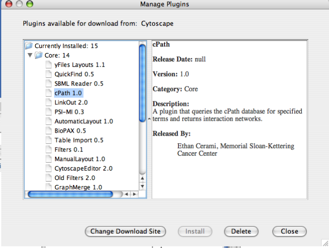

The Plugin Manager, first introduced in Cytoscape 2.5, allows users to quickly and conveniently add extra features to Cytoscape directly from within Cytoscape, eliminating the need for manual searches through different webpages to install and update plugins.
For plugin developer, to enable automatic download of your plugin to Cytoscape users, your plugin should be in compliance with Cytoscape 2.5, and the plugin jar/zip files should be uploaded to the Cytoscape plugin web site at http://cytoscape.org/plugins25/index.php.
Note: If you do not have Internet access enabled, you will not see the list of available plugins or be able to automatically update existing ones; however, you will still be able to view and delete previously installed plugins.
To install new features, go to the Plugin Manager at Plugins → Manage Plugins. On the left side of the window that pops up, you will see plugin folders labeled Currently Installed and Available for Install. Double-clicking on these will show sub-folders, and then the plugins themselves. To find out more about a specific plugin, click on its name to display some basic information on the right-hand side of the window.

The Currently Installed folder contains a number of default plugins that are fully integrated in every copy of Cytoscape, as well as any additional installed plugins. In contrast, the Available for Install folder displays plugins that may be installed. To install and use these plugins, click on the file name and then click on the Install button at the bottom of the window. A license agreement may appear, in which case you must accept it in order to download the plugin. You will then see a progress bar as the plugin is automatically downloaded and installed into your current version of Cytoscape. The progress bar will disappear when the download is complete. Other plugins can then be downloaded, or the manager can be closed by clicking the Close button.
Once a new plugin is added, it can immediately be used. Closing and restarting Cytoscape is not required. For example, installing the MCODE plugin will automatically result in new menu options such as Plugins → MCODE → Start MCODE.
Troubleshooting
If an installation error appears, automatic installation of the plugin may not be supported. To manually install the plugin, go to the Cytoscape plugins page (http://cytoscape.org/plugins25/index.php), scroll down to find the plugin, click on the appropriate link to download the file, and then save it in the Cytoscape/plugins folder on your hard drive.
To delete an existing plugin, go to the Plugin Manager at Plugins → Manage Plugins, click on the appropriate plugin once to select it, and then click the Delete button at the bottom of the manager. It is best to avoid deleting core plugins, as this may cause Cytoscape or other plugins to malfunction. A plugin will be completely deleted after you have restarted Cytoscape.
Going to Plugins → Update Plugins will result in Cytoscape automatically accessing the Internet to look for updated versions of the plugins you have installed. If newer versions are available, Cytoscape will then display the available updates in the Plugin Manager; otherwise, it will inform you that there are no updatable plugins. When multiple updates are detected, you will have the option to download some or all of the updates. Some updates may require re-accepting the license before the download will begin. All updates require Cytoscape to be restarted in order for the update to be fully installed. After clicking the Update All or Update Selected buttons, a progress bar will appear showing the status of the download; it will disappear once the update is complete, and the Plugin Manager can then be closed by clicking the Close button.
Note: The Update All button will update all listed plugins to the newest available version. If you prefer a different version, select the name and click Update Selected.
The Plugin Manager automatically connects to the Cytoscape website and the sites of registered Cytoscape plugins to check for and download any available plugins and updates. To change this setting, open the Plugin Manager (by going to Plugins → Manage Plugins) and click the Change Download Site button. You will be asked to choose a site from a preset list of bookmarks. Select one and click Ok. Alternatively, click the Add Site button to open the Bookmark Manager and modify the list of bookmarks. In the Bookmark Manager, choose the plugins category from the dropdown list, and then add/edit/delete URLs using the appropriate buttons on the right-hand side of the window. After the correct site is selected, set it as the download site by clicking OK. The Plugin Manager will refresh using that site.
Note: Custom download sites added from the Plugin Manager will not be saved when you exit Cytoscape.